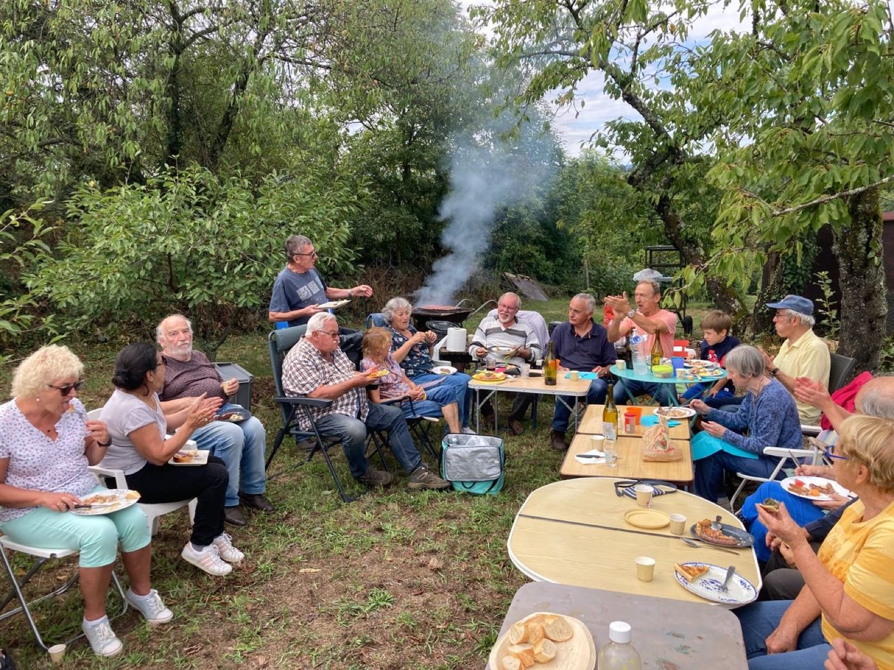

📅 N'oubliez pas [nom de l'événement — à compléter] le [date à compléter]. Voir l'agenda →
Coteaux du Lyonnais · Chaponost (69)
Les Coteaux
de Chaponost
La dernière vigne de Chaponost, 130 bénévoles, 400 bouteilles par an.
Mot de bienvenue
Bienvenue chez les Coteaux de Chaponost ! Nous cultivons depuis des années la dernière vigne du village, un petit bout de patrimoine que 130 bénévoles font vivre, saison après saison, dans la bonne humeur. Ce site vous invite à nous découvrir, à suivre notre agenda et à nous rejoindre.
Prochain rendez-vous
Le prochain rendez-vous de l'association est annoncé ici dès qu'il est fixé. (à mettre à jour par l'association)
Le site en un coup d'œil
Découvrir les Coteaux
Notre histoire
Une vigne sauvée
par ceux qui l'aiment
À Chaponost, comme dans tout l'ouest lyonnais, la vigne a longtemps rythmé la vie du village. Il n'en reste aujourd'hui qu'une parcelle : la dernière. Des bénévoles de tous âges se sont réunis pour la cultiver, la faire vivre et transmettre ce patrimoine des Coteaux du Lyonnais.
Taille, vendanges, pressage, mise en bouteille : tout se fait ensemble, à la main, dans la bonne humeur.

Une question, une envie de nous rejoindre ?
L'association est ouverte à tous, sans condition d'âge ni d'expérience.
Nous écrire